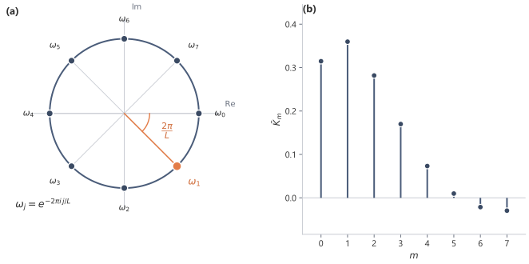

# shared example: a strongly damped two-dimensional system
import numpy as np
from ssm_book.numpy_ref.discretisation import zoh_discretise
A = np.array([[-0.8, 1.0], [-1.0, -0.8]]) # a strongly damped rotation
B = np.array([1.0, 0.5])
C = np.array([1.0, -1.0])
Abar, Bbar = zoh_discretise(A, B, dt=0.5)
L = 646 Transfer Functions and Kernel Generation
The convolution kernel contains the powers \(C\bar A^m\bar B\). Generating those powers directly is expensive when \(\bar A\) is dense. A generating function packages all coefficients into a single matrix inverse, \(C(I-z\bar A)^{-1}\bar B\), so the question becomes whether that inverse can be evaluated quickly at many points.
6.1 From powers to a resolvent
The discrete kernel is
\[ \bar K_m=C\bar A^m\bar B, \qquad m=0,\dots,L-1. \]
The direct method forms these values one at a time. That procedure is clear, but it hides another structure. The whole kernel can be collected into a single function whose coefficients are the kernel values.
A generating function turns a sequence into an analytic object. For state space models, the resulting function is a matrix inverse.
The continuous-time version is called a transfer function. The discrete-time version is a generating function, or equivalently a \(z\)-transform. In both cases, the dynamics of the state are encoded by a resolvent.1 The continuous case exposes the resolvent most directly. The same algebra then carries over to the discrete recurrence.
Start with the continuous-time single-input single-output (SISO) model
\[ x'(t)=Ax(t)+Bu(t), \qquad y(t)=Cx(t), \qquad x(0)=0. \]
The impulse response is
\[ h(\tau)=Ce^{A\tau}B. \]
The Laplace transform of a signal \(f\) is
\[ \mathcal L\{f\}(s) = \int_0^\infty e^{-st}f(t)\dd t, \]
for values of the complex variable \(s\) where the integral converges. Let
\[ U(s)=\mathcal L\{u\}(s), \qquad Y(s)=\mathcal L\{y\}(s). \]
Taking the Laplace transform of the state equation gives
\[ sX(s)-x(0)=AX(s)+BU(s). \]
With \(x(0)=0\),
\[ (sI-A)X(s)=BU(s). \]
Therefore
\[ X(s)=(sI-A)^{-1}BU(s), \]
and so
\[ Y(s)=C(sI-A)^{-1}BU(s). \]
The function
\[ \boxed{ H(s)=C(sI-A)^{-1}B } \]
is the transfer function. In the complex variable \(s\), time-domain convolution becomes multiplication:
\[ Y(s)=H(s)U(s). \]
The matrix
\[ (sI-A)^{-1} \]
is called the resolvent of \(A\). It is defined whenever \(sI-A\) is invertible. The values of \(s\) for which \(sI-A\) is not invertible are exactly the eigenvalues of \(A\). Those values are the poles of the transfer function, unless they are cancelled by the input and output maps \(B\) and \(C\).
Thus the same eigenvalues that shaped the impulse response in time also appear as singularities of the transfer function.
6.2 The transfer function in diagonal coordinates
The resolvent inherits whatever structure the state matrix has, and the simplest such structure is a diagonalisation. Suppose \(A\) is diagonalisable:
\[ A=V\Lambda V^{-1}, \qquad \Lambda=\diag(\lambda_1,\dots,\lambda_N). \]
Then
\[ sI-A = V(sI-\Lambda)V^{-1}, \]
so
\[ (sI-A)^{-1} = V(sI-\Lambda)^{-1}V^{-1}. \]
Define
\[ \widetilde C=CV, \qquad \widetilde B=V^{-1}B. \]
Then
\[ H(s) = \widetilde C(sI-\Lambda)^{-1}\widetilde B. \]
Since \(\Lambda\) is diagonal,
\[ (sI-\Lambda)^{-1} = \diag\left( \frac{1}{s-\lambda_1}, \dots, \frac{1}{s-\lambda_N} \right). \]
In the SISO case,
\[ H(s) = \sum_{i=1}^N \frac{\widetilde C_i\widetilde B_i}{s-\lambda_i}. \]
Thus a diagonalisable state space model has a transfer function built from simple rational terms. Each eigenvalue contributes a denominator \(s-\lambda_i\), weighted by how strongly the corresponding mode is written by \(B\) and read by \(C\).
Each pole \(\lambda_i\) is the same eigenvalue that produced the time-domain mode \(e^{\lambda_i t}\) in Section 3.3. Reading the partial-fraction sum back into time, the term \(\widetilde C_i\widetilde B_i/(s-\lambda_i)\) is the Laplace transform of \(\widetilde C_i\widetilde B_i\,e^{\lambda_i t}\), so the rational form and the modal form are the same decomposition seen through the Laplace transform. A pole far into the left half-plane is a fast-decaying mode. A pole near the imaginary axis is a slowly decaying memory mode, since \(\Real\lambda_i\) close to zero makes \(e^{\lambda_i t}\) fade slowly.
Take the damped rotation \(A=\begin{pmatrix}-0.8 & 1\\ -1 & -0.8\end{pmatrix}\). Its eigenvalues are \(\lambda_{1,2}=-0.8\pm i\), a single conjugate pair, so the SISO transfer function is the two-term sum
\[ H(s) = \frac{\widetilde C_1\widetilde B_1}{s-(-0.8+i)} + \frac{\widetilde C_2\widetilde B_2}{s-(-0.8-i)}. \]
The common real part \(-0.8\) sets the decay rate of both terms, and the imaginary part \(\pm 1\) sets the oscillation, so the two poles together describe one decaying rotation rather than two independent fading modes.
Writing \(H(s)\) this way also fixes the cost of evaluating it. Forming \(C(sI-A)^{-1}B\) from a dense \(A\) solves an \(N\times N\) linear system at each value of \(s\), which is \(O(N^3)\) work per point. In diagonal coordinates the same value is the scalar sum \(\sum_i \widetilde C_i\widetilde B_i/(s-\lambda_i)\), which costs \(O(N)\) per point once the eigenvalues and the transformed maps \(\widetilde C,\widetilde B\) are known. The discrete kernel-generation problem will turn on exactly this gap, between an \(O(N^3)\) dense solve and an \(O(N)\) diagonal sum at each evaluation point.
6.3 The discrete generating function
The discrete recurrence carries the same steps, with the power series of the resolvent in place of the Laplace integral. Return to
\[ x_{k+1}=\bar A x_k+\bar B u_k, \qquad y_k=Cx_{k+1}, \qquad x_0=0. \]
The discrete kernel is
\[ \bar K_m=C\bar A^m\bar B. \]
Define its generating function by
\[ G(z) = \sum_{m=0}^{\infty}\bar K_m z^m. \]
The generating function is an ordinary power series whose coefficients are the kernel values.2
Substituting the state space formula for \(\bar K_m\) gives
\[ G(z) = \sum_{m=0}^{\infty}C\bar A^m\bar B z^m. \]
Move the fixed matrices outside the sum:
\[ G(z) = C\left(\sum_{m=0}^{\infty}(z\bar A)^m\right)\bar B. \]
The matrix geometric series satisfies
\[ \sum_{m=0}^{\infty}(z\bar A)^m = (I-z\bar A)^{-1} \]
whenever the series converges. Therefore
\[ \boxed{ G(z)=C(I-z\bar A)^{-1}\bar B. } \]
The kernel has not changed; it has been repackaged. The coefficients \(\bar K_m\) are still the lag weights of the convolution, but the resolvent is the representation in which matrix structure can reduce the cost of generating them.
The generating function is the discrete analogue of the continuous transfer function
\[ H(s)=C(sI-A)^{-1}B. \]
The same pattern appears in both cases: the input map, the resolvent of the state matrix, and the output map.
The generating function is a power series, so it has a region of convergence. The matrix series
\[ \sum_{m=0}^{\infty}(z\bar A)^m \]
converges when the powers of \(z\bar A\) decay. In spectral terms, this is controlled by the spectral radius
\[ \rhoop(\bar A)=\max\{ |\mu| : \mu\in\spec(\bar A)\}. \]
The series converges for
\[ |z|<\frac{1}{\rhoop(\bar A)} \]
when \(\rhoop(\bar A)>0\). If the discrete system is stable, then \(\rhoop(\bar A)<1\), so the unit circle lies inside the natural region of convergence.
The same stability condition appears in the kernel. If the powers \(\bar A^m\) decay, then distant kernel coefficients decay. If the powers do not decay in a direction that is reached by \(B\) and read by \(C\), the kernel need not be summable.
For a finite sequence of length \(L\), the model only uses the truncated kernel
\[ \bar K_0,\dots,\bar K_{L-1}. \]
The finite computation can still be defined even when the infinite series is not absolutely summable. Stability is nevertheless the condition that makes the infinite impulse response well behaved.
6.4 The discrete generating function in diagonal coordinates
As in the continuous case, diagonalising the state matrix separates the resolvent into scalar denominators. In discrete time the denominator is \(1-z\mu_i\) rather than \(s-\lambda_i\). The poles are therefore located at \(z=1/\mu_i\), while the kernel coefficients are governed by powers of the discrete eigenvalues \(\mu_i\). Suppose \(\bar A\) is diagonalisable:
\[ \bar A=V\operatorname{diag}(\mu_1,\dots,\mu_N)V^{-1}. \]
Define
\[ \widetilde C=CV, \qquad \widetilde B=V^{-1}\bar B. \]
Then
\[ G(z) = \widetilde C \left(I-z\operatorname{diag}(\mu_1,\dots,\mu_N)\right)^{-1} \widetilde B. \]
Since the middle matrix is diagonal,
\[ \left(I-z\operatorname{diag}(\mu_1,\dots,\mu_N)\right)^{-1} = \diag\left( \frac{1}{1-z\mu_1}, \dots, \frac{1}{1-z\mu_N} \right). \]
In the SISO case,
\[ \boxed{ G(z)= \sum_{i=1}^N \frac{\widetilde C_i\widetilde B_i}{1-z\mu_i}. } \]
The formula is the discrete counterpart of the continuous partial-fraction form
\[ H(s)=\sum_{i=1}^N\frac{\widetilde C_i\widetilde B_i}{s-\lambda_i}. \]
The kernel coefficients are recovered by expanding each denominator as a geometric series:
\[ \frac{1}{1-z\mu_i} = \sum_{m=0}^{\infty}(z\mu_i)^m. \]
Thus
\[ G(z) = \sum_{m=0}^{\infty} \left( \sum_{i=1}^N\widetilde C_i\widetilde B_i\mu_i^m \right)z^m, \]
so
\[ \bar K_m = \sum_{i=1}^N\widetilde C_i\widetilde B_i\mu_i^m. \]
The diagonal discrete model therefore produces a kernel that is a sum of discrete exponential modes. Each mode contributes \(\widetilde C_i\widetilde B_i\mu_i^m\), so \(\mu_i^m\) is a per-step decay factor and \(|\mu_i|\) is the amount by which that mode shrinks at every step. The continuous and discrete poles measure decay in two different clocks. A continuous pole sits at \(s=\lambda_i\) and sets the decay rate of \(e^{\lambda_i t}\) in time. The matching discrete pole sits at \(z=1/\mu_i\) and sets the decay \(|\mu_i|^m\) per step. The two are linked through the zero-order-hold map of Section 4.3, which sends \(\lambda_i\) to \(\mu_i=e^{\lambda_i\Delta}\), so a slow continuous mode with \(\Real\lambda_i\) near zero becomes a discrete mode with \(|\mu_i|\) near one.
For the shared damped rotation \(A=\begin{pmatrix}-0.8 & 1\\ -1 & -0.8\end{pmatrix}\) with step size \(\Delta=0.5\), the discrete eigenvalues have modulus \(|\mu_1|=|\mu_2|=e^{-0.8\times 0.5}=e^{-0.4}=0.670\), so every kernel coefficient \(\bar K_m\) is bounded by a constant times \(0.670^m\) and the kernel fades by roughly a third each step. As \(|\mu_i|\to 1\) the factor \(\mu_i^m\) barely shrinks with \(m\), so the mode’s kernel contribution decays slowly and the spectral radius approaches the boundary where the geometric series only just sums.
6.5 Finite kernels as polynomials
For a sequence of length \(L\), only the first \(L\) kernel coefficients are needed. Package them into the polynomial
\[ G_L(z) = \sum_{m=0}^{L-1}\bar K_m z^m. \]
Similarly package the input sequence as
\[ U_L(z) = \sum_{k=0}^{L-1}u_k z^k. \]
The coefficient of \(z^k\) in the product \(G_L(z)U_L(z)\) is
\[ \sum_{m=0}^k\bar K_m u_{k-m}, \]
as long as \(0\le k\le L-1\). The result is exactly the causal convolution output \(y_k\).
Finite convolution can be understood as polynomial multiplication followed by truncation to the first \(L\) coefficients. An \(L\)-point FFT computes multiplication modulo \(z^L-1\), which is circular convolution of length \(L\). Exact linear convolution of two length-\(L\) sequences requires padding to at least \(2L-1\) points before the FFT.
The polynomial view also reframes kernel generation. Evaluating the finite polynomial \(G_L(z)\) at the \(L\) roots of unity and applying an inverse discrete Fourier transform recovers its \(L\) coefficients exactly. Sampling the infinite generating function \(G(z)\) at those same nodes instead gives circular aliasing:
\[ \widetilde K_m=\sum_{p\ge 0}\bar K_{m+pL}. \]
The tail coefficients \(\bar K_{m+L},\bar K_{m+2L},\dots\) fold into lag \(m\). For a strongly stable system the powers \(\bar A^m\) decay quickly, so the folded tail may be negligible. Otherwise a finite-length correction is needed before the inverse FFT recovers the true first \(L\) coefficients.
Each library recovers the kernel from \(G\) sampled on the roots of unity and compares it to the kernel formed directly from \(C\bar A^m\bar B\):
from ssm_book.numpy_ref.kernels import ssm_kernel
from ssm_book.numpy_ref.transfer import (
evaluate_on_roots_of_unity, recover_kernel_by_ifft)
K_rec = ssm_kernel(Abar, Bbar, C, L)
K_fft = recover_kernel_by_ifft(evaluate_on_roots_of_unity(Abar, Bbar, C, L))
err = float(np.max(np.abs(K_rec - K_fft)))
print(f"max |kernel - IFFT recovery| = {err:.1e}")max |kernel - IFFT recovery| = 4.5e-12import torch
from ssm_book.torch_ref.kernels import ssm_kernel as ker_t
from ssm_book.torch_ref.transfer import (
evaluate_on_roots_of_unity as roots_t, recover_kernel_by_ifft as ifft_t)
K_rec = ker_t(Abar, Bbar, C, L)
K_fft = ifft_t(roots_t(Abar, Bbar, C, L))
err = float(torch.max(torch.abs(K_rec - K_fft)))
print(f"max |kernel - IFFT recovery| = {err:.1e}")max |kernel - IFFT recovery| = 4.5e-12import jax.numpy as jnp
from ssm_book.jax_ref.kernels import ssm_kernel as ker_j
from ssm_book.jax_ref.transfer import (
evaluate_on_roots_of_unity as roots_j, recover_kernel_by_ifft as ifft_j)
K_rec = ker_j(Abar, Bbar, C, L)
K_fft = ifft_j(roots_j(Abar, Bbar, C, L))
err = float(jnp.max(jnp.abs(K_rec - K_fft)))
print(f"max |kernel - IFFT recovery| = {err:.1e}")max |kernel - IFFT recovery| = 4.5e-12
6.6 What the resolvent changes
The recurrence view focuses on powers:
\[ \bar K_m=C\bar A^m\bar B. \]
The generating-function view focuses on an inverse:
\[ G(z)=C(I-z\bar A)^{-1}\bar B. \]
The resolvent and the kernel powers are the same object in two forms. The inverse is the sum of all powers:
\[ (I-z\bar A)^{-1} = I+z\bar A+z^2\bar A^2+\cdots. \]
The advantage of the resolvent form is that matrix structure can be exploited before expanding the series. If \(\bar A\) is diagonal, the inverse separates into scalar denominators. If \(\bar A\) is diagonal plus a low-rank correction, identities for low-rank matrix inverses become relevant. If \(\bar A\) has another special form, the resolvent is often the place where that structure is most visible.
The kernel-generation problem can therefore be stated in two equivalent ways. In the time domain, the task is to compute the coefficients \(C\bar A^m\bar B\) in fewer than \(O(LN^2)\) operations. In the frequency domain, it is to evaluate the resolvent \(C(I-z\bar A)^{-1}\bar B\) at \(L\) points in fewer than \(O(LN^2)\) total operations and recover those coefficients by an inverse FFT.
A useful state matrix must therefore have both a memory interpretation and a resolvent that can be applied in fewer than \(O(N^2)\) operations per sample point.
6.7 Notation
| Symbol | Meaning | Type |
|---|---|---|
| \(H(s)\) | continuous transfer function \(C(sI-A)^{-1}B\) | scalar or matrix-valued |
| \(s\) | complex Laplace variable | \(\C\) |
| \(G(z)\) | discrete generating function \(\sum_{m\ge 0}\bar K_mz^m\) | scalar or matrix-valued |
| \(z\) | complex generating-function variable | \(\C\) |
| \((sI-A)^{-1}\) | continuous resolvent | \(N\times N\) matrix |
| \((I-z\bar A)^{-1}\) | discrete resolvent | \(N\times N\) matrix |
| \(\rhoop(\bar A)\) | spectral radius of \(\bar A\) | \(\R_{\ge 0}\) |
| \(G_L(z)\) | truncated kernel polynomial | polynomial of degree at most \(L-1\) |
| \(U_L(z)\) | input polynomial | polynomial of degree at most \(L-1\) |
Summary
The continuous impulse response has Laplace transform
\[ H(s)=C(sI-A)^{-1}B. \]
The discrete kernel has generating function
\[ G(z)=C(I-z\bar A)^{-1}\bar B. \]
Both expressions replace a sequence of matrix powers with a resolvent. Diagonalising the state matrix separates the resolvent into scalar terms, but a dense change of basis does not by itself make long-kernel generation cheap.
The FFT recovers coefficients from polynomial samples. For a finite length-\(L\) kernel, sampling the finite polynomial at \(L\) roots of unity and applying an inverse FFT recovers the \(L\) coefficients. Sampling the infinite generating function instead introduces circular aliasing unless the tail is removed or corrected.
Exercises
Starting from \(\bar K_m=C\bar A^m\bar B\) and the definition \(G(z)=\sum_{m\ge 0}\bar K_m z^m\), move the fixed matrices \(C\) and \(\bar B\) outside the sum and use the matrix geometric series to derive \(G(z)=C(I-z\bar A)^{-1}\bar B\). State the condition on \(z\) under which the series converges, in terms of the spectral radius \(\rhoop(\bar A)\).
TipSolutionSubstituting \(\bar K_m=C\bar A^m\bar B\) gives \[ G(z)=\sum_{m=0}^{\infty}C\bar A^m\bar B\,z^m. \] The matrices \(C\) and \(\bar B\) do not depend on \(m\), and the scalar \(z^m\) commutes with them, so they come out of the sum, leaving the matrix series in the middle: \[ G(z)=C\left(\sum_{m=0}^{\infty}(z\bar A)^m\right)\bar B. \] When the powers \((z\bar A)^m\) tend to zero, the partial sums telescope through \((I-z\bar A)\sum_{m=0}^{M}(z\bar A)^m=I-(z\bar A)^{M+1}\), whose right-hand side tends to \(I\), so \(\sum_{m\ge 0}(z\bar A)^m=(I-z\bar A)^{-1}\). Hence \[ G(z)=C(I-z\bar A)^{-1}\bar B. \] The powers \((z\bar A)^m\) decay exactly when \(|z|\,\rhoop(\bar A)<1\), that is when \[ |z|<\frac{1}{\rhoop(\bar A)} \] (and for every \(z\) when \(\rhoop(\bar A)=0\)). For a stable system \(\rhoop(\bar A)<1\), so the closed unit disc lies inside this region.
Let \(\bar A=V\diag(\mu_1,\dots,\mu_N)V^{-1}\) with \(\widetilde C=CV\) and \(\widetilde B=V^{-1}\bar B\). Show that \(G(z)=\sum_{i=1}^N \widetilde C_i\widetilde B_i/(1-z\mu_i)\), and by expanding each denominator as a geometric series, derive \(\bar K_m=\sum_{i=1}^N\widetilde C_i\widetilde B_i\mu_i^m\). Identify which factor controls the decay of \(\bar K_m\) with \(m\).
TipSolutionWrite \(D=\diag(\mu_1,\dots,\mu_N)\). Then \(I-z\bar A=V(I-zD)V^{-1}\), so \((I-z\bar A)^{-1}=V(I-zD)^{-1}V^{-1}\) and \[ G(z)=C(I-z\bar A)^{-1}\bar B=(CV)(I-zD)^{-1}(V^{-1}\bar B)=\widetilde C(I-zD)^{-1}\widetilde B. \] The middle factor is diagonal, \((I-zD)^{-1}=\diag\!\big(1/(1-z\mu_1),\dots,1/(1-z\mu_N)\big)\), so the quadratic form collapses to a single sum over the diagonal: \[ G(z)=\sum_{i=1}^N\frac{\widetilde C_i\widetilde B_i}{1-z\mu_i}. \] Expanding each denominator as a geometric series, \(1/(1-z\mu_i)=\sum_{m\ge 0}(z\mu_i)^m\), and collecting the coefficient of \(z^m\) gives \[ \bar K_m=\sum_{i=1}^N\widetilde C_i\widetilde B_i\,\mu_i^m. \] Each term decays like \(|\mu_i|^m\), so the slowest decay is set by the eigenvalue of largest modulus, \(\rhoop(\bar A)=\max_i|\mu_i|\). The weights \(\widetilde C_i\widetilde B_i\) fix the amplitude of each mode but not its decay rate.
import numpy as np from ssm_book.numpy_ref.discretisation import zoh_discretise from ssm_book.numpy_ref.kernels import ssm_kernel A = np.array([[-0.8, 1.0], [-1.0, -0.8]]) B = np.array([1.0, 0.5]) C = np.array([1.0, -1.0]) Abar, Bbar = zoh_discretise(A, B, dt=0.5) Bbar = Bbar.reshape(-1) mu, V = np.linalg.eig(Abar) Ct, Bt = C @ V, np.linalg.inv(V) @ Bbar K_direct = ssm_kernel(Abar, Bbar, C, 10) K_modal = np.array([np.sum(Ct * Bt * mu**m) for m in range(10)]) print(np.max(np.abs(K_direct - K_modal))) # 1.7e-16The modal sum reproduces the kernel \(C\bar A^m\bar B\) to floating-point error (\(1.7\times10^{-16}\)); here \(|\mu_1|=|\mu_2|=0.670\), so \(|\bar K_m|\) falls off at that rate.
Sample the generating function at the \(L\) roots of unity, \(G(\omega_j)\) with \(\omega_j=e^{-2\pi ij/L}\), and apply the inverse discrete Fourier transform to the samples. Show that the result is \(\widetilde K_m=\sum_{p\ge 0}\bar K_{m+pL}\), the kernel coefficients with the tail \(\bar K_{m+L},\bar K_{m+2L},\dots\) folded back. Explain why a small spectral radius makes \(\widetilde K_m\approx\bar K_m\) for \(0\le m\le L-1\).
TipSolutionThe samples are the full power series evaluated at the roots of unity, \[ G(\omega_j)=\sum_{n\ge 0}\bar K_n\,\omega_j^{\,n}=\sum_{n\ge 0}\bar K_n\,e^{-2\pi ijn/L}. \] The inverse discrete Fourier transform of these samples is \[ \widetilde K_m=\frac1L\sum_{j=0}^{L-1}G(\omega_j)\,e^{2\pi ijm/L} =\sum_{n\ge 0}\bar K_n\left(\frac1L\sum_{j=0}^{L-1}e^{2\pi ij(m-n)/L}\right). \] The inner geometric sum over \(j\) is \(1\) when \(n\equiv m\pmod L\) and \(0\) otherwise, so only the indices \(n=m,\,m+L,\,m+2L,\dots\) survive: \[ \widetilde K_m=\sum_{p\ge 0}\bar K_{m+pL}. \] For a normal matrix, and for a diagonalisable matrix up to the conditioning constant of the eigenvector basis, \(\|\bar A^n\|\) is bounded by a constant times \(\rhoop(\bar A)^n\). The folded terms are then bounded by a multiple of \(\rhoop(\bar A)^{m+L}+\rhoop(\bar A)^{m+2L}+\cdots\), which for \(\rhoop(\bar A)<1\) is of order \(\rhoop(\bar A)^L\). In the fully non-normal case one uses the standard variant with any rate \(r\) satisfying \(\rhoop(\bar A)<r<1\), after changing the constant. Thus a sufficiently small spectral radius makes the folded tail negligible and \(\widetilde K_m\approx\bar K_m\) for \(0\le m\le L-1\).
import numpy as np from ssm_book.numpy_ref.discretisation import zoh_discretise from ssm_book.numpy_ref.kernels import ssm_kernel from ssm_book.numpy_ref.transfer import ( evaluate_on_roots_of_unity, recover_kernel_by_ifft) B = np.array([1.0, 0.5]) C = np.array([1.0, -1.0]) A = np.array([[-0.1, 1.0], [-1.0, -0.1]]) # lightly damped -> rho near 1 Abar, Bbar = zoh_discretise(A, B, dt=0.5) rho = np.max(np.abs(np.linalg.eigvals(Abar))) # 0.951 for L in (8, 16, 32, 64): K = ssm_kernel(Abar, Bbar, C, L) K_fft = recover_kernel_by_ifft(evaluate_on_roots_of_unity(Abar, Bbar, C, L)) print(L, np.max(np.abs(K - K_fft)), rho**L)With \(\rhoop(\bar A)=0.951\) the recovery error shrinks alongside \(\rhoop(\bar A)^L\): from about \(0.32\) at \(L=8\) to \(0.030\) at \(L=64\), tracking \(\rhoop(\bar A)^L\) from \(0.67\) down to \(0.041\). For the strongly damped system of Section 5, where \(\rhoop(\bar A)=0.670\), the same recovery at \(L=64\) already matches the direct kernel to \(4\times10^{-12}\).
The direct kernel construction \(C\bar A^m\bar B\) costs \(O(LN^2)\) for a dense \(\bar A\). Explain why rewriting the kernel as the resolvent \(C(I-z\bar A)^{-1}\bar B\) does not by itself reduce this cost, and state what additional structure on \(\bar A\) would make the resolvent form cheaper to evaluate at the points needed to recover the kernel.
TipSolutionThe direct construction builds the kernel by the recurrence \(v_{m+1}=\bar A v_m\) from \(v_0=\bar B\), reading \(\bar K_m=Cv_m\); each step is one dense matrix-vector product at \(O(N^2)\), so the \(L\) coefficients cost \(O(LN^2)\). Recovering the kernel from the resolvent needs \(G\) at the \(L\) roots of unity, and each sample \(C(I-z\bar A)^{-1}\bar B\) solves a dense \(N\times N\) linear system in \(z\bar A\). Solving from scratch costs \(O(N^3)\) per point; a dense factorisation of \(I-z\bar A\) at one \(z\) cannot be reused at another \(z\), but a single \(z\)-independent Schur (or eigen-) decomposition of \(\bar A\), computed once at \(O(N^3)\), reduces each shifted solve to \(O(N^2)\), so the \(L\) samples again cost at least \(O(LN^2)\). A dense inverse is no cheaper than dense powers; the resolvent only rearranges the same work.
The saving comes from structure that makes a single resolvent solve cost less than \(O(N^2)\). If \(\bar A\) is diagonal, \(\bar A=\diag(\mu_1,\dots,\mu_N)\), then \((I-z\bar A)^{-1}\) is diagonal and \(G(z)=\sum_i \widetilde C_i\widetilde B_i/(1-z\mu_i)\) costs \(O(N)\) per point, giving \(O(LN)\) in total. The same holds for any form whose resolvent applies in fewer than \(N^2\) operations: a diagonal-plus-low-rank \(\bar A\), where the low-rank inverse identity reduces the solve to a diagonal solve plus a small correction. Fast kernel generation therefore requires a state matrix whose resolvent has exploitable structure.
Footnotes and references
Transfer functions, generating functions, resolvents, and FFT-based convolution are standard in linear systems and signal processing. The continuous-time state space transfer function and resolvent are treated in standard linear-systems texts (Kailath 1980). The zero-order hold, the bilinear or Tustin transform (Tustin 1947), the \(z\)-transform, and the generating-function view are standard in discrete-time signal processing (Oppenheim et al. 1999); FFT convolution goes back to Cooley and Tukey (Cooley and Tukey 1965).↩︎
Many signal-processing texts write the \(z\)-transform as \(\sum_{m\ge0}\bar K_m z^{-m}\). Here \(z\) is used as an ordinary power-series variable, so the discrete resolvent appears as \((I-z\bar A)^{-1}\).↩︎